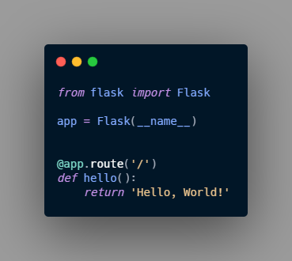

Basics - Based in Official Docs example
In this notes I will use the example on the official documentation to learn how to use it, in other notes in this same directory i might use other sources, but in this case i will use the official documentation
Lets first get something out of the ways, the 99% of the examples and tutorials on the web use the basic hello world example of Flask and don’t enter in details or good practice, that is the main reason to start with the Official documentation first in this learning path, here is the typical hello world on Flask

Application Layout¶
This layout might change depending of the size or the length of the application although i think this will suite most of the application I’m thinking to use Flask for. Here I follow exactly the documentation

The tutorial assume that all the content will be in a folder called “Flask-tutorial” and a virtual environment was created
the documentation suggest some to add an specific .gitignore that i thing came useful since will help me to avoid commit any unnecessary document or folder to git or any version control system
gitignore Example¶
1 2 3 4 5 6 7 8 9 10 11 12 13 14 | venv/ *.pyc __pycache__/ instance/ .pytest_cache/ .coverage htmlcov/ dist/ build/ *.egg-info/ |
Application Factory¶
As shown on the hello world! code snippet, a typical Flask application is a instance of the Flask class, any configuration, URL or change will be done with the class ( or register with the class), this instance is a global instance.
In this example, they took another approach, it seems to be a best practice, and a future prove implementation. They, instead of, a global instance, they will create a instance inside a function. This function is called Application factory, all configuration registration or set up will be done inside this function, and then application will be returned, in other words, the return of this application factory will be the application itself.
We will create a script called __init__.py that will serve as container of the application Factory and it tells Python to tread the current directory as a package ( in this case the directory is flaskr)
flaskr/init.py
1 2 3 4 5 6 7 8 9 10 11 12 13 14 15 16 17 18 19 20 21 22 23 24 25 26 27 28 29 30 31 32 | import os from flask import Flask def create_app(test_config=None): """ Creates and configure the application, it is the application factory """ app = Flask(__name__, instance_relative_config=True) app.config.from_mapping( SECRET_KEY='dev', DATABASE=os.path.join(app.instance_path, 'flaskr.sqlite'), ) if test_config is None: """ load the instance config, if it exist, when not testing""" app.config.from_pyfile('config.py', silent=True) else: """ load the testing config if passed in""" app.config.from_mapping(test_config) # Ensure the instance folder exist try: os.makedirs(app.instance_path) except OSError: pass # a simple page that say hello @app.route('/hello') def hello(): return ' Hello, world!' return app |
create_app() the application factory¶
app = Flask(__name__, instance_relative_config=True)Create a Flask instance:__name__is the name of the current python module, it is a convince way to tell the app where it is located.instance_relative_configthis is a way to let the app know the location of some configuration, this configuration are particular of this instance and are not committed to the version control, this configuration are store on Instance folder this folder is located outside the directoryflaskr
app_config.from_mapping()set some default configuration that the app will use:SECRET_KEYit is use by Flask to keep the application safe, in a development stage the value is ‘dev’ but in production must be replace for a random string.DATABASEit is the path to the instance folder where the SQLite database is store.
app.config.from_pyfile()It overwrite the configuration or default configuration, the values are taken from a file calledconfig.pyfile in the instance folder if it exist. the productionSECRET_KEYcan be store here.test_configcan be also past to this factory, and it will be use instead of the instance configuration.
os.makedirs()It ensure theapp.instance_pathexist, Flask doesn’t create the instance folder automatically, but it needs to be created because your project will create the SQLite database file there.@app.route()Create the route the the function that will give back the webpage
Run the application¶
We are going to lunch the app in development mode, in this way the browser will be refresh and server restarted after any change in the code.
For linux and Mac:¶
1 2 3 | export FLASK_APP=flaskr export FLASK_ENV=development flask run |
For Windows:¶
1 2 3 | set FLASK_APP=flaskr set FLASK_ENV=development flask run |
Run this in the terminal or CMD and we will get a message like